Чому я її люблю:
- Вона викликає в мене почуття настальгії.
- В ній можна побудувати будь що.
- В її можна грати з друзями.
Мої улюблені моменти:
- Перші добуті алмази
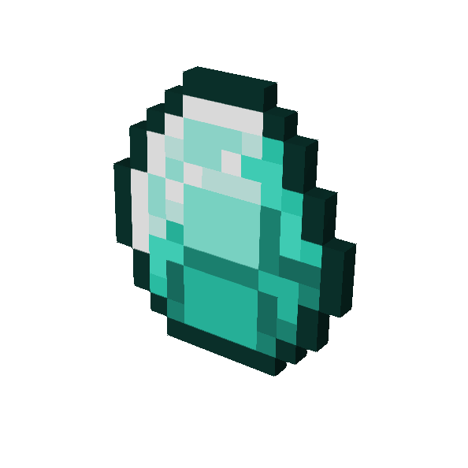
- Перший побудований дім
Чому це моя улюблена гра:
Чому я її люблю:
Мої улюблені моменти:

Гра розроблена у 2009 році шведським програмістом Маркусом Перссоном, відомим також як «Notch» , і надалі розробляється заснованою Маркусом Перссоном компанією Mojang, котра належить Xbox Game Studios раніше відома як Microsoft Studios.
У Minecraft є п'ять режимів гри:

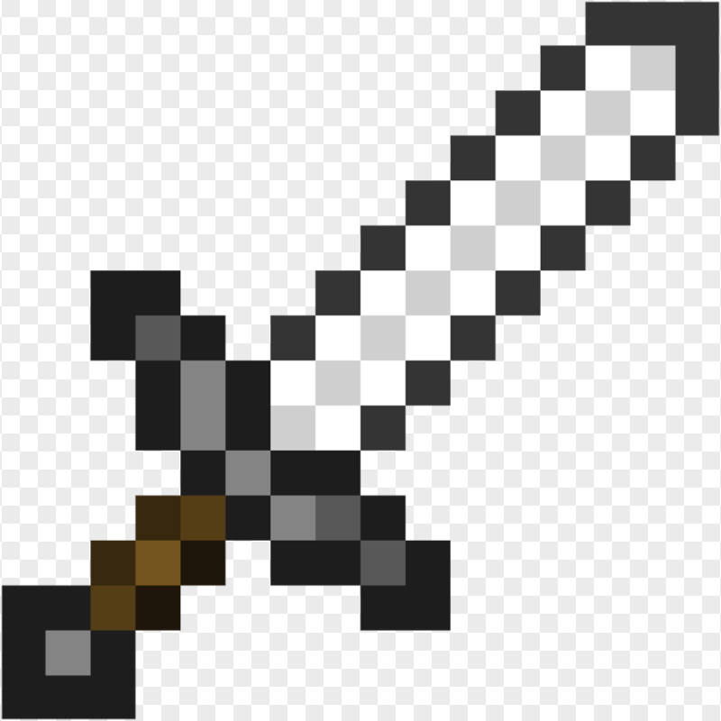
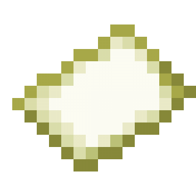
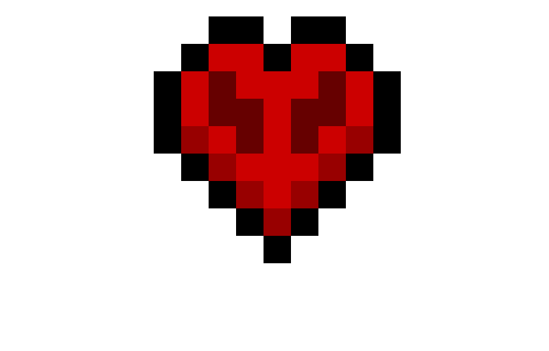

Цей режим пропонує мінімум обмежень і передбачає безперешкодне створення будь-яких будівль. Гравець безсмертний, може літати та має необмежену кількість всіх блоків та придметів в грі.
Тут гравець повинен подорожувати та шукати потрібні блоки, битися з мобами, вести господарство, виготовляти нові матеріали і майструвати інструменти. Тут персонаж має, крім інвентарю, шкали здоров'я, голоду і досвіду.
Режим, заснований на настільних рольових іграх. Тут немає змоги руйнувати чи встановлювати блоки, але можна подорожувати і взаємодіяти з предметами і мобами.
Подібний на «Виживання» за винятком того, що діє найважча складність та відсутня можливість відродитися після вичерпання запасу здоров'я. Після його загибелі гравцеві пропонується одразу видалити свій світ і почати заново, або оглянути перед цим світ.
В цьому режимі гравці можуть літати скрізь блоки і дивитись від особи будь-якого гравця або істоти але не можуть взаємодіяти з світом. Режим польоту неможливо вимкнути.
світ, в якому з самого початку гри перебуває гравець. Там знаходиться багато цінних матеріалів, на поверхні росте багато рослин, є зміни погоди, дня і ночі.
наповнений скелями та лавою світ, який ще називають Підсвітом або Нижнім світом.
найменший світ, подібний на іншопланетний, що складається з летючих островів. Покинути Енд можливо тільки загинувши, або перемігши боса, дракона Енду.
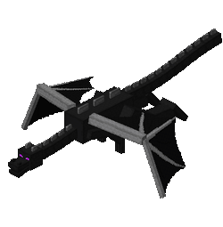
Пройденням гри вважається перемогти ендер дракона. Для цього коли гравець з'являється йому необхідно здобути дерево після чого в інвентарі зробити верстак
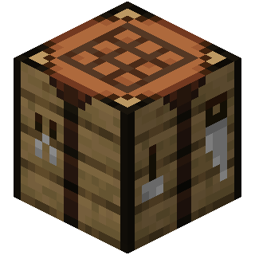
а на ньому дерев'яне кайло . Далі потрібно задопомогою кайла здобути камень для кам'яного кайла
. Далі потрібно задопомогою кайла здобути камень для кам'яного кайла 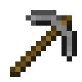
, сокири, пічки та іноді меча. Після цього потрібно знайти желізо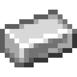
воно може бути в печерах як руда, в скринях як переплавлене жилізо ше можна найти жилізного голема в селі при його вбивстві з нього може випасти від 3 до 5 жиліза. Після чого треба зробити відро, щит, сокиру та якщо хватає броню після чого знайти лаву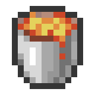
на поверхні і задопомогою води зробити портал в незер. (Під час пошуків бажано знайти лук і стріли.) В незері потрібно знайти незерська фортецю де будуть пломіні(іфріти)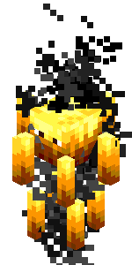
з яких після смерті подають стрижень пломіня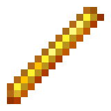
. Потім потрібно знайти перлину енду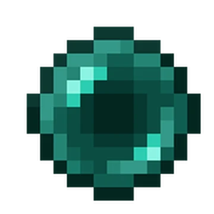
, вони падають з ендерменів з шансом 50% або їх можна виторгувати в пігленів в обмін на золото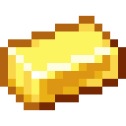
з шансом 2.18%. Далі потріюно зробити око енду . Потім з допомогою ока енду знайти портал в енд, активувати його та зайти туди. Далі необхідно зламати кристали енду
. Потім з допомогою ока енду знайти портал в енд, активувати його та зайти туди. Далі необхідно зламати кристали енду щоб дракон не регенерував та з задопомогою сокири та лука вбити його та застрибнути в портал який відкриється.
щоб дракон не регенерував та з задопомогою сокири та лука вбити його та застрибнути в портал який відкриється.
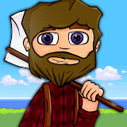
випускє огляди оновлень, летсплеї, а також є учасником приватного сервера MineShield. Його контент часто містить гумор та чітку позицію автора.
Його ютуб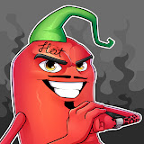
популярний російськомовний відеоблогер, стрімер та летсплейщик, відомий за каналом EdisonPts на YouTube.
Його ютуб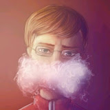
популярний російськомовний YouTube-блогер та летсплеєр, справжнє ім'я якого Роман Фільченков, відомий своїми масштабними сюжетними відеосеріалами у грі Minecraft. Він створює власні всесвіти з унікальними сюжетами, персонажами та механіками.
Його ютубна цьому сайті є все про гру
Посилання на сайтОфіційний сайт майнкрафту
Посилання на сайт